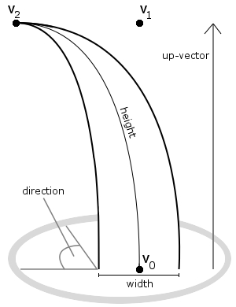
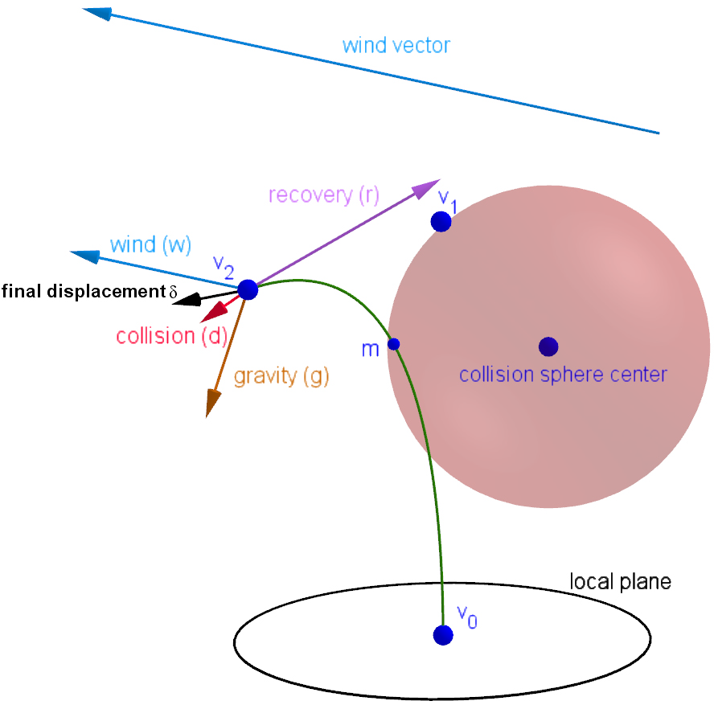
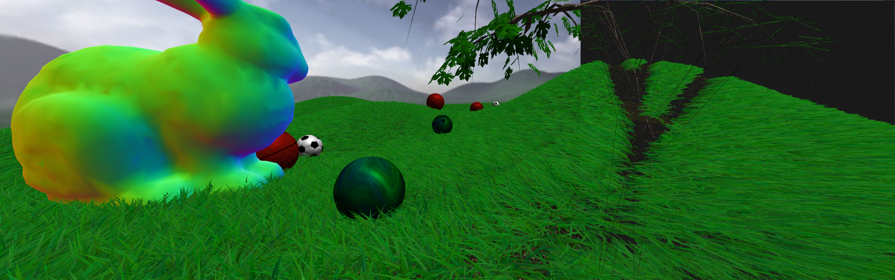
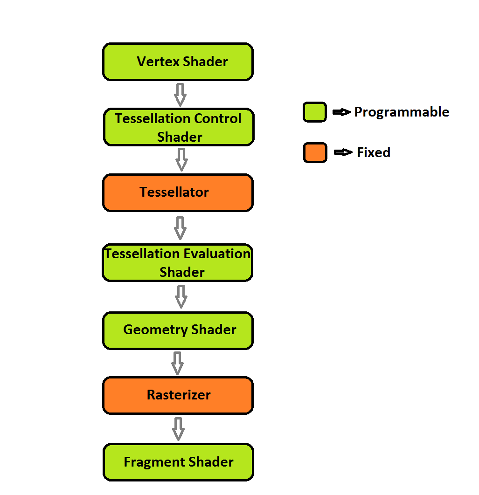

Final Project - Grass Simulation & Rendering - A Comparison between Tessellation Shader and Mesh Shader Pipeline
by Zibo Ye(ziboy)
Demo
Here is a demo video showing the grass rendering in real-time under different total counts and different pipeline methods:
Introduction to the paper "Responsive real-time grass rendering for general 3D scenes"
The paper "Responsive real-time grass rendering for general 3D scenes" introduces a grass simulation and rendering solution that can compute and render a large number of grass blades in real-time. The pipeline is designed as follows:
Grass blade model
The paper first introduces a grass blade model that uses Bezier curves with three control points to represent the shape of the grass blade.

v0: the position of the root, precomputed offline to form a reasonable meadow.
v2: the position of the tip, updated every frame by compute shader to represent the physical movement of the grass blade.
v1: another control point, controlled by the position of v0 and v2, to form a smooth curve.
For the physical simulation, here are some parameters that can be adjusted to control the behavior of the grass blade:
Up vector
Width
Height
Direction (orientation)
Stiffness coefficient
These parameters are packed into 4 vec4s and are used as the input and output of the grass simulation compute shader and the input of the grass rendering vertex shader.
Grass Simulation
Every frame, the position of the tip of the grass blade v2 is updated by a compute shader based on the force contributions from three natural sources:
Gravity (g)
Recovery (r)
Wind (w)
The paper also counts the contribution from collisions with other objects in the scene. For simplicity, I will ignore this part in my implementation.
Here is an image to show the contribution of each force to the grass blade:

After computing the new position of the tip, the compute shader will also validate and correct it to make sure the grass is not under the ground.
Culling
To achieve higher compute and rendering performance, the paper introduces a culling process to determine which grass blades are visible to the camera and should be rendered. It includes four steps:
Orientation test: to cull the blades that are not important for the final rendering, based on occlusions and the orientation of the blade to the camera.
View-frustum test: to cull the blades that are not in the camera's view frustum.
Distance test: to cull the blades that are too far away from the camera.
Occlusion test: to cull the blades that are occluded by other objects in the scene.
After the culling process, the remaining grass blades are accumulated and sent to the rendering pass to be rendered.
Grass Rendering
For grass rendering, the paper used the following pipeline:
Indirect rendering: to start a draw call using the data stored in a buffer on the GPU. In this way, CPU doesn't need to know the exact number of culled grass blades, and all the data can stay on the GPU without synchronizing with the CPU. This can cut down the CPU-GPU communication overhead.
Vertex Shader: each grass blade input is 4 vec4s computed in the grass simulation pass.
Tessellation Control Shader: to control the tessellation level of each grass blade.
Tessellation Evaluation Shader: to evaluate the bezier curve and generate more detailed grass blades geometry based on the data from the compute shader.
Pixel Shader: to render the grass blades with a simple shading method.
Here is an example result of the paper:

Overall, the paper introduces a complete pipeline to simulate and render grass in real-time. The pipeline is designed to be efficient and scalable to handle a large number of grass blades and it looks good. However, it is implemented in tessellation shader, before the mesh shader pipeline is introduced in the later version of the graphics API.
Recently, AMD published a blog post about using mesh shaders to implement grass rendering on DX12 and HLSL, but they didn't provide a detailed performance comparison between the two methods. As a graphics enthusiast, I am interested in comparing the performance and visual quality of the two methods and see if mesh shader can provide a better solution for grass rendering, and if so, where is the bottleneck and why.
Therefore, in this project, I will implement the grass rendering pipeline using both tessellation shader and mesh shader and compare their performance and visual quality. but before that, let's have a brief introduction to the tessellation shader pipeline and the mesh shader pipeline.
Introduction to Tessellation Shader Pipeline
The tessellation shader pipeline is a feature introduced in OpenGL 4.0 and DirectX 11 back in 2009. It allows the GPU to generate additional geometry based on the input vertices, which can be used to increase the level of detail of the rendered object. The pipeline consists of three stages:
Tessellation Control Shader (Hull Shader): to control the tessellation level of each patch.
Tessellation Primitive Generator (Tessellator): to generate the tessellated patch based on the tessellation level.
Tessellation Evaluation Shader (Hull Shader): to evaluate the tessellated patch and generate more detailed geometry.
Here is a diagram showing the tessellation shader pipeline:

The tessellation shader pipeline is widely used in game development to increase the level of detail of the terrain, water, and other complex geometry. It can also be used to implement procedural geometry generation, such as grass rendering, as introduced in the paper. However, the tessellation shader pipeline has some limitations:
Performance: the tessellation shader pipeline can be performance-intensive, especially when generating a large amount of geometry. The tessellation level needs to be carefully controlled to balance the visual quality and performance.
Complexity: the tessellation shader pipeline requires additional shaders and stages, which can increase the complexity of the rendering pipeline.
Compatibility: the tessellation shader pipeline is not supported on all hardware and platforms, which can limit its use in some cases.
You can find more about the tessellation shader pipeline in the OpenGL wiki and the Microsoft documentation. Here are some tutorials and examples to help you get started with tessellation shaders: 1, 2, 3.
Introduction to Mesh Shader Pipeline
My Code
this demo is using infra code from [University of Pennsylvania, CIS 565: GPU Programming and Architecture, Project 5 - Vulkan Grass Rendering](https://github.com/CIS565-Fall-2023/Project5-Vulkan-Grass-Rendering). Kudos for their instructors and TAs to produce this infrastructure code for easier implementation!